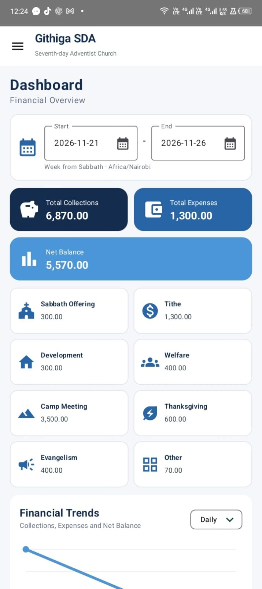
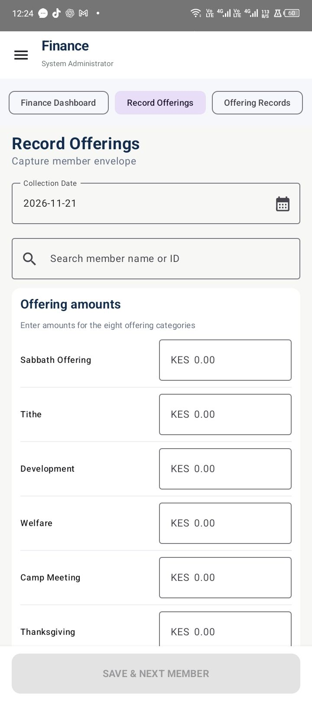
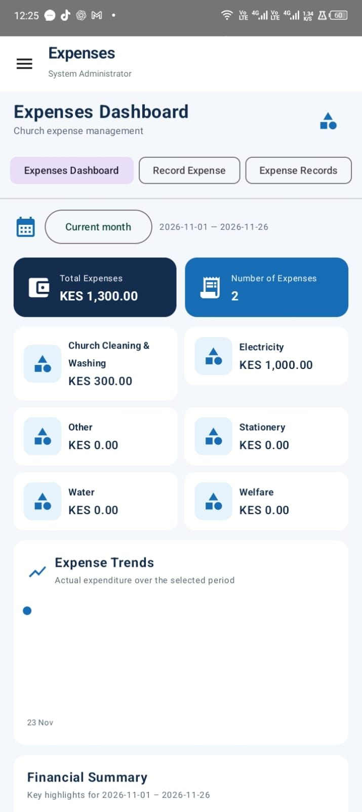
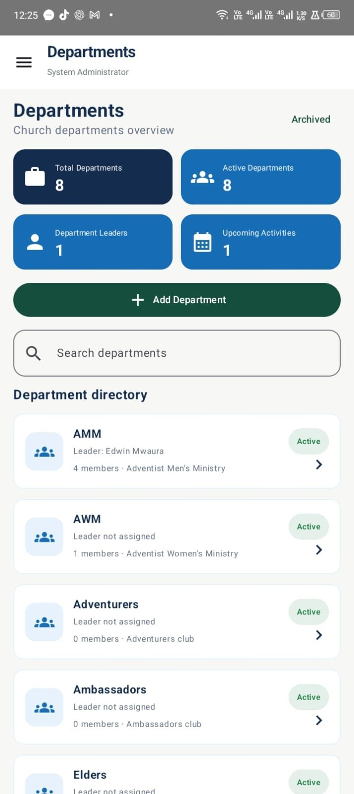
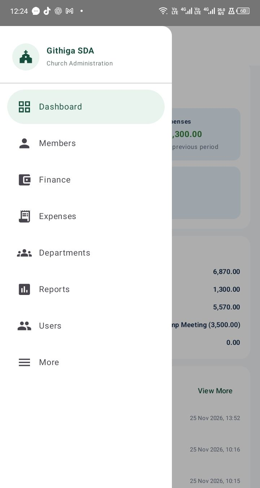
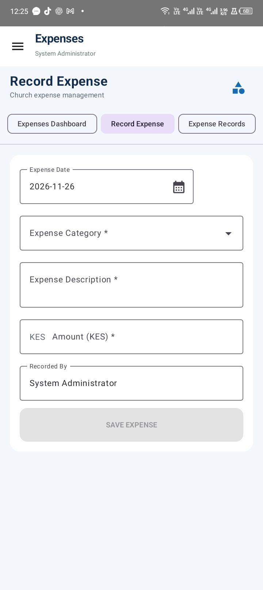
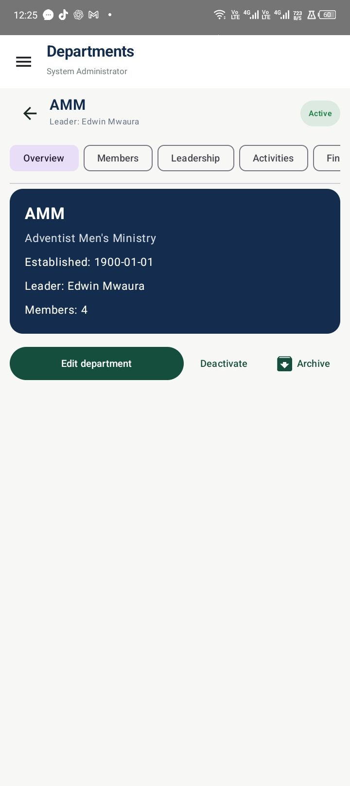
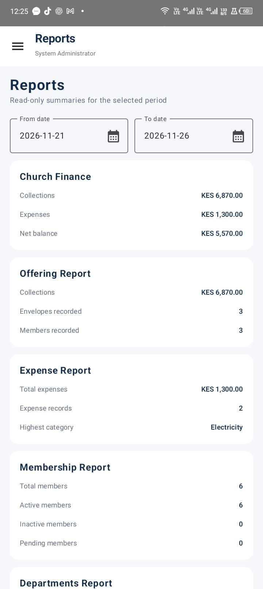

Dashboard
Collections, expenses and net balance for any period, with trends and comparisons.
COMMUNITY PROJECT · COMPLETED
A management app for a local church that brings membership records, departments, offerings, expenses and reports into one system, with separate roles for the people who run it.
OVERVIEW
This is a finished church management app built for Githiga SDA Church. It replaces scattered paper records with one system for members, departments and the church’s finances.
It is an Android app backed by its own server and database, with four roles (admin, treasurer, pastor and member), so each person can only do what their role allows.
THE PROBLEM
A church handles a lot of information at once: who its members are, which departments they serve in, what is given each Sabbath and what is spent. When this lives in books and loose papers, totals are slow to produce and hard to trust.
I wanted offerings and expenses to be recorded once, added up automatically and summarised for any period, so the people who lead the church can see the full picture whenever they need it.
THE APPLICATION
Finances, members and departments are connected, so every report is built from the same records.

01 — DASHBOARD
Choose a date range and see total collections, total expenses and the net balance, with every offering category and a financial trend. Figures are compared with the previous equivalent period, and recent activity shows what has just been recorded.

02 — OFFERINGS
Each member’s offering envelope is captured in one entry, split across the eight categories: Sabbath Offering, Tithe, Development, Welfare, Camp Meeting, Thanksgiving, Evangelism and Other. Records can then be searched and filtered by date and category.

03 — EXPENSES
Expenses are recorded by category, such as cleaning, electricity, stationery and water. The expenses dashboard shows totals, trends and the highest-spending category compared with the previous period.

04 — DEPARTMENTS
A directory of departments shows each one’s leader, status and number of members, with totals for departments, leaders and upcoming activities. New departments can be added and old ones archived.
MORE OF THE APP
A few more screens. Tap any image to enlarge it.




SYSTEM AREAS
Collections, expenses and net balance for any period, with trends and comparisons.
A membership directory with search, filters and counts of active, inactive and pending members.
Offering envelopes recorded across eight categories and reviewed as records or collections.
Spending recorded by category, with totals, trends and a record of each expense.
Leaders, members, leadership positions, activities and finances for each department.
Read-only summaries of finances, offerings, expenses, membership and departments.
Admin, treasurer, pastor and member roles, with permissions enforced by the server and secure sign-in.
Find members, offerings and expenses quickly by name, ID, date or category.
Every dashboard and report can be viewed for the period that matters.
TECHNOLOGY
WHAT I LEARNED
This project taught me to build a full system end to end: an Android app, a Ktor API and a MongoDB database, with sign-in and role-based access. I learned to model members, departments, offerings and expenses so dashboards and reports stay accurate.
It also showed me how much care financial software needs: totals have to be correct, records have to be traceable and the screens have to be clear to people who are not technical.
WHAT’S NEXT
The app is complete. Natural next steps are richer reports and exports, and using the data a church already collects to surface useful insights for its leaders.